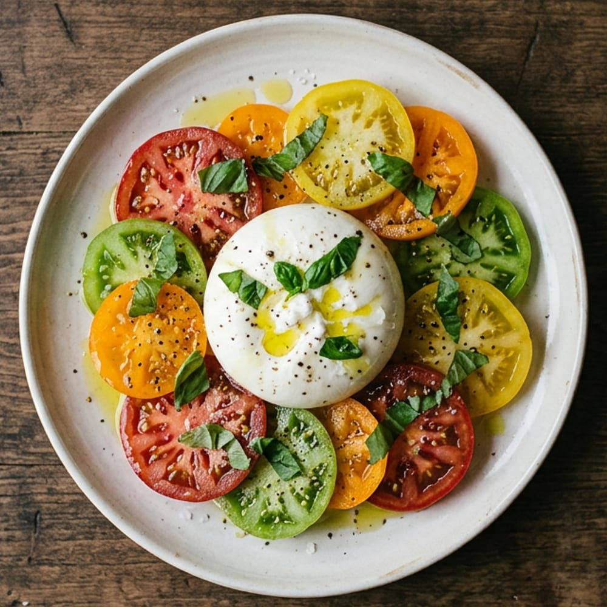
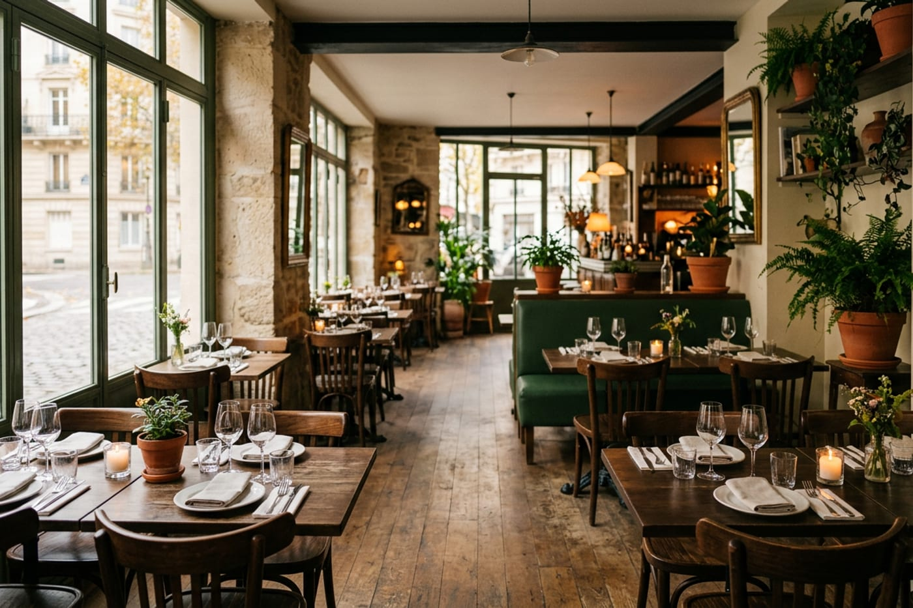
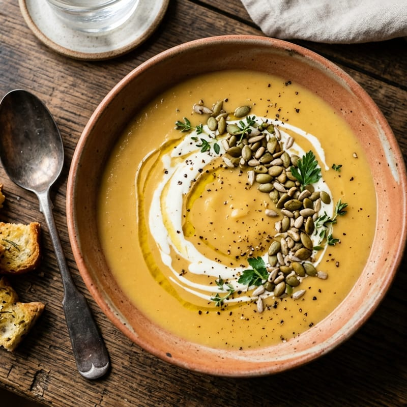
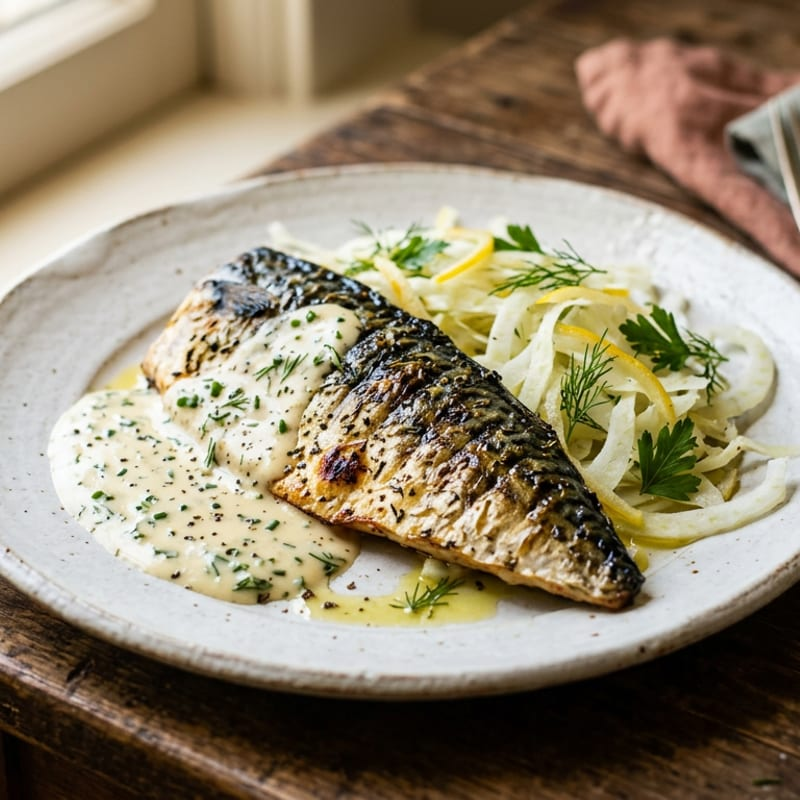
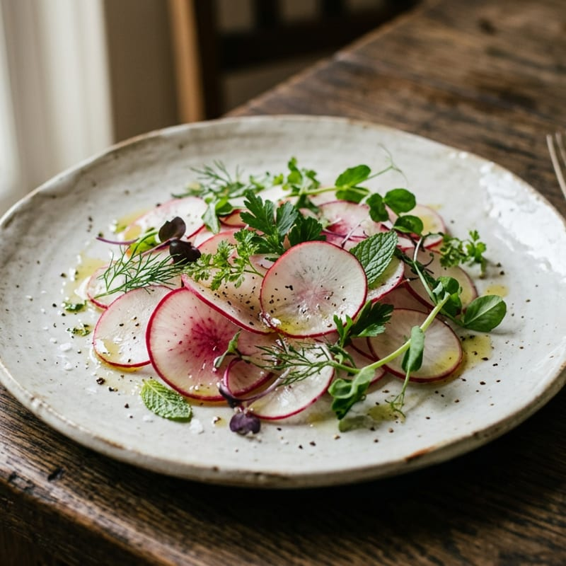
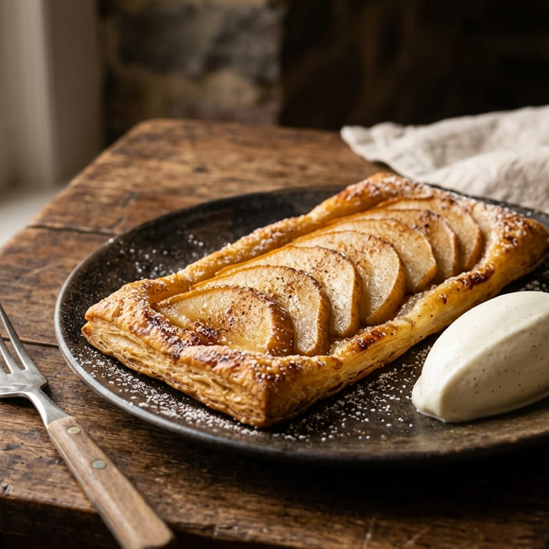

Mardi – samedi, midi et soir
Cuisine de marché, à la table du quartier.
Une carte courte qui change avec les saisons, des produits d'Île-de-France et une formule du midi à 21 €. Au cœur du 11e arrondissement.
- 32 couverts
- 12 places en terrasse
- 4 cartes par an

Automne
La carte
Tout est préparé sur place, à partir de produits frais livrés chaque matin.
Du mardi au vendredi
La formule du midi
Une entrée, un plat et un dessert du jour, écrits à l'ardoise chaque matin selon le marché.
- 21 € Entrée et plat, ou plat et dessert
- 26 € Entrée, plat et dessert

Le lieu
Un bistrot de quartier, sans chichis
Après dix ans dans des bistrots parisiens, Inès a ouvert Orvelle pour cuisiner ce que les producteurs d'Île-de-France lui apportent chaque semaine. Une salle lumineuse, une terrasse au calme, une cuisine ouverte.
La salle se privatise pour vos repas de groupe, jusqu'à 32 personnes.
- Produits frais livrés chaque matin
- Pain et desserts faits maison
- Salle accessible aux personnes à mobilité réduite
En ce moment
Dans nos assiettes

Velouté de courge 
Maquereau grillé 
Radis et herbes du jardin 
Tarte fine aux poires
Réservation
Réserver une table
Réponse par SMS dans l'heure pendant le service. Pour plus de 8 personnes, appelez-nous.
Demande enregistrée (démonstration)
Sur un vrai site, le restaurant recevrait votre demande et vous confirmerait la table par SMS. Ici, aucun message n'a été envoyé.